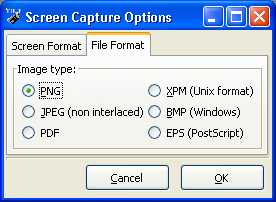
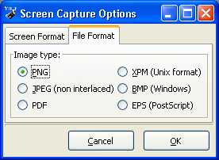

As you will see in the remote popup
menu, you can (un)check the Path and
the Receive as. Same apply
for the local popup menu by the Options
sub-menu.
| BlackLink or GrayLink |
ParallelLink |
Silver/Direct
Link |
|||
| Windows |
Linux |
Windows |
Linux |
||
| port #1 | COM1 |
/dev/ttyS0 |
LPT1 |
/dev/parport0 |
Cable #1 |
| port #2 | COM2 |
/dev/ttyS1 | LPT2 |
/dev/parport1 | Cable #2 |
| port #3 | COM3 |
/dev/ttyS2 | LPT3 |
/dev/parport2 | Cable #3 |
| port #4 | COM4 |
/dev/ttyS3 | N/A |
N/A | Cable #4 |
| VTi |
TiEmu |
|
| null |
automatic |
automatic |
| port #1 |
Always VTi |
TiLP or TiEmu |
| port #2 |
TiLP or TiEmu |
TiLP or TiEmu |
 
- gray-scale : the emulate button may be useful for people who want to release screenshots on their websites. When this button is checked, TiLP saves images using emulated grayscales (that is to say, it replaces the black pixels with dark pixels and white pixels with green pixels). In fact, images saved by this feature look just like those gotten from VTi.